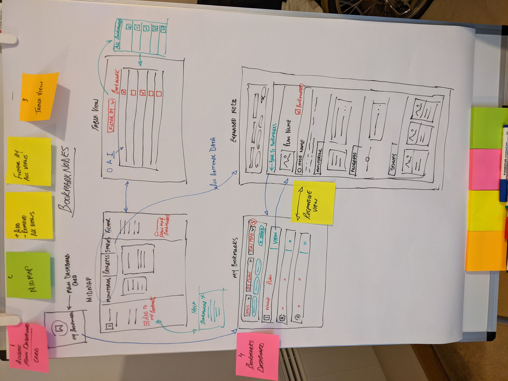

UX Design Portfolio
Visual examples of my work across end-to-end UX projects, including complex systems architecture, accessible redesigns, and AI-assisted workflows. My approach integrates rigorous user research, interactive prototyping, and cross-functional stakeholder management.
People HR Smart Menu
Project Overview
Redefining navigation from a passive list to an active intelligence tool.
The legacy navigation for People HR required users to drill down through multiple clicks to find basic information or perform routine tasks. My goal was to reduce time-to-value by creating a "Smart Menu"—a navigation system that surfaces critical data and actions at the top level, eliminating the need for deep diving into the application.
The Challenge: Information Interaction Cost
User research indicated that simple queries (e.g., "How much annual leave do I have left?") required significant interaction cost: clicking into a module, waiting for a page load, and scanning a dashboard. The navigation acted solely as a map, rather than a tool.
The Solution: "Surface, Don't Dig"
I designed a hover-activated Smart Menu that uses progressive disclosure to reveal high-priority information instantly.
Key UX Features:
Data Exposure over Deep Linking: Instead of simply linking to the "Annual Leave" page, the Smart Menu queries the user's database to display their actual remaining balance and upcoming booking dates directly in the flyout. This changes the interaction from Navigational (going somewhere) to Informational (learning something).
Quick Actions & "One-Click" logic: Users can initiate frequent workflows—such as "Request Leave" or "Add New Starter"—directly from the menu panel. This reduced the user journey for common tasks from four clicks to one.
Contextual Sub-Navigation: The menu organises deep links (Settings, Entitlements, History) alongside the data, ensuring that if the user does need to dig deeper, the relevant pathways are immediately accessible without cluttering the primary interface.
Visual Hierarchy & Scannability: Used clear iconography and a split-panel layout to differentiate between "My Stats" (personal data) and "Management" (team actions), reducing cognitive load for admin users who switch contexts frequently.
The Outcome
The new Smart Menu successfully transformed the navigation bar from a static directory into a dynamic utility. By bringing data to the surface layer, we significantly improved the overall user experience, reducing time-on-task for high-frequency interactions and streamlining user behaviour across the platform.

Expense Dashboard
Project Overview
Transforming a legacy administrative burden into a high-performance, accessible financial tool.
The goal of this project was to overhaul a clunky, outdated expense system that was causing significant friction for employees and finance teams alike. By applying a user-centred design approach, I transformed the tool into a streamlined, WCAG-compliant platform that prioritises visibility, speed, and ease of use.
Discovery & Insights: Moving from Assumptions to Data
To understand the friction points of the legacy system, I conducted focus groups and 1:1 interviews with both general users and finance administrators.
Key Findings:
Lack of Transparency: Users felt "lost" regarding their claim status, leading to frequent manual enquiries to the finance department.
Frictional Uploads: The manual receipt upload process was slow and prone to errors, causing frustration during high-volume submissions.
Accessibility Gaps: The original interface failed to meet modern accessibility standards, excluding users with diverse needs.
Iterative Design Process: Validating the Journey
I employed a rigorous iterative process to ensure the solution was grounded in user needs before moving to development.
Low-Fidelity Wireframing: Built structural frameworks to validate the new layout and logic flow early, ensuring the information architecture was sound.
High-Fidelity Prototyping: Developed interactive prototypes to stress-test the "Submit Expense" journey, specifically refining the drag-and-drop receipt feature to ensure it felt intuitive and responsive.
The "Status-at-a-Glance" Header: Introduced a persistent header and inline expansion for claim details. This minimised page navigation and reduced cognitive load by keeping users in context.
Development & Execution: Bridging the Gap
As the lead designer, I acted as the primary link between business requirements and technical implementation.
Stakeholder Management: Navigated complex requirements from Finance and HR, ensuring the interface remained user-friendly while maintaining the rigorous data accuracy required for financial auditing.
Technical Handover: Provided a comprehensive design system and worked side-by-side with engineers during the build phase to ensure the final product was pixel-perfect and functionally sound.
The Outcome: Turning Tedious into Efficient
The launch of the modernised platform resulted in a significant shift in how employees interacted with company finances.
Streamlined Submission: A new modal-based workflow simplified a complex process into a few logical steps, significantly reducing time-on-task.
Enhanced Clarity: High-contrast UI and clear status badges (Pending, Approved, Rejected) provided immediate transparency, reducing "status-check" enquiries by nearly 40%.
Inclusive Design: By adhering to WCAG standards, we delivered a platform that is accessible to all employees, turning a formerly tedious task into a quick, efficient, and inclusive process.

New Members Dashboard
Project Overview
Transforming a legacy directory into a modern, accessible hub for employee discovery.
I redesigned the Members Dashboard to provide all employees with a clean, intuitive way to find and connect with colleagues. The goal was to modernise the UI, ensure full WCAG accessibility, and surface critical professional data—such as reporting lines and office locations—without the need for deep-diving into individual profiles.
The Challenge
The original dashboard was visually dated and functionally siloed. Key information was buried, and the interface lacked the accessibility required for a diverse, modern workforce, leading to high interaction costs for simple employee searches.
The Solution: "Information at a Glance"
I implemented a comprehensive UX workflow—from user testing and Figma prototyping to stakeholder management and QA—to deliver a streamlined directory.
Key UX Features:
Advanced Search & Filtering: Positioned a persistent search bar with integrated filters directly above the member list. This allows users to instantly narrow down results by department, location, or role, significantly reducing discovery time.
Contextual Detail View: Surfaced essential data (Job Title, Office, Division, and Employee Number) in a clean, organised layout, reducing the clicks required to identify colleagues.
Hierarchical Clarity: Introduced a visual "Reports To" feature to provide an instant understanding of organisational structure.
WCAG Compliance: Re-engineered the UI with high-contrast elements and screen-reader support, ensuring an inclusive experience for every employee.
Execution & Result
Bridge to Development: Provided pixel-perfect specifications and worked closely with engineers through to the final QA phase to ensure functional integrity.
Outcome: Successfully launched a modernised, accessible platform that simplified cross-company connection and significantly improved navigational efficiency across the organisation.

Username & Password
Project Overview
Achieving 100% platform access through a flexible, admin-led login system.
To solve for users without corporate email addresses, I designed a hybrid authentication system. This allowed Company Administrators to provision accounts using either traditional email invites or bespoke "Username and Password" credentials, ensuring every employee could access the platform securely.
The Challenge
The legacy architecture was hardcoded for email verification. I had to design a secure, manual provisioning workflow for administrators that adhered strictly to existing UI patterns and technical constraints while maintaining a centralised security model.
The Solution
Collaborating closely with the System Architect, I developed a logic-heavy solution that integrated into the legacy framework without compromising security.
Key UX Features:
Admin-Only Provisioning: A secure interface allowing administrators to choose the appropriate authentication method (Email vs. Username) for each user.
Unified Login Layer: A seamless entry point that automatically identifies account types, ensuring zero friction for employees regardless of how their account was created.
Proactive Validation: Robust inline validation for admins to prevent duplicate usernames and enforce password strength at the point of creation.
Execution & Result
Full UX Lifecycle: Led the project from user testing and Figma prototyping through to architectural mapping and final QA.
Outcome: Successfully removed the email requirement as a barrier to entry, allowing the entire workforce to be onboarded securely and efficiently by their administrators.

Salary Extras
Project Overview
Modernising engagement through an accessible, high-performance benefits platform.
I led the redesign of Salary Extras, a platform for managing workplace benefits. My goal was to transform a complex, text-heavy system into a clean, intuitive experience that prioritises scannability and accessibility for a diverse workforce.
The Challenge
The legacy platform suffered from high cognitive load and fragmented navigation. Users struggled to differentiate between benefit categories, and the interface failed to meet the modern accessibility standards required for an inclusive employee experience.
The Solution: "Benefit Discovery Simplified"
Following a full UX lifecycle—including user testing and rapid Figma prototyping—I delivered a modernised interface focused on efficiency.
Key UX Features:
- Streamlined Information Architecture: Re-architected the layout to prioritise high-value benefits, reducing the clicks needed to access core services.
- Card-Based Visual Hierarchy: Introduced a consistent card system and clear iconography to improve scannability and cross-platform consistency.
- WCAG Accessibility: Overhauled colour contrast and typography to ensure full compliance and inclusivity for all users.
- Responsive Refinement: Optimised UI patterns for a seamless mobile experience, catering to employees accessing benefits on the go.
Execution & Result
Technical Collaboration: Managed the project from research to developer handover, working closely with engineers during QA to ensure a pixel-perfect build.
Outcome: Successfully modernised the Salary Extras experience, resulting in a more engaging, accessible, and user-friendly platform that empowers employees to manage their benefits with ease.

AI-Driven UX KPI Dashboard (Proof of Concept)
Project Overview
Demonstrating 200x efficiency gains through AI-assisted design workflows.
This Proof of Concept (PoC) explores how AI tooling can bypass traditional, week-long iteration cycles. Using Claude, I generated a system-compliant, interactive dashboard prototype in just 30 minutes, proving that designers can move from concept to functional logic almost instantly.
The Challenge
Traditional workflows—from discovery to high-fidelity Figma mocks—often span weeks. I aimed to prove that an AI-assisted "Design-to-Code" workflow could produce a sophisticated, data-driven interface that respects professional design system constraints in minutes rather than days.
The Solution: 30-Minute Rapid Prototyping
Using iterative prompting, I built a functional PoC that visualises KPIs while maintaining strict alignment with organisational UI patterns.
Key UX Features:
Dynamic Visualisation: A scannable interface for tracking team performance and design-system health.
System-Compliant UI: Prompted the AI to respect specific brand patterns, colours, and typography.
Functional Logic: Developed a prototype with real-world interaction, providing immediate feedback on data density and user flow.
Efficiency & Execution
Workflow Validation: Condensed a standard two-week design phase into a 30-minute session.
Bridging the Gap: Eliminated the static barrier of traditional tools by generating a code-based prototype for a more realistic "feel."
Outcome: Proved that AI enables designers to rapidly ideate, validate complex data sets, and communicate technical intent to stakeholders with minimal overhead.

Feature Workshop: Unified Bookmarking Logic
Project Overview
Designing a seamless, cross-view bookmarking system for sustainability management.
I facilitated a feature workshop with the OnePlanet team to solve a complex navigational challenge. The goal was to create a unified bookmarking logic that allows users to track Actions, Outcomes, and Indicators seamlessly across Dashboard, Mind Map, and Table views.
The Challenge
Users manage complex data across different visual contexts, but lacked a universal way to "pin" high-priority items. This created a fragmented experience where users lost focus when switching between different views of the same data.
The Solution: Unified Cross-View Logic
Through collaborative logic mapping, I defined a universal bookmarking behaviour that functions as a persistent thread throughout the app.
Key UX Features:
Global Action Logic: A unified "Bookmark" state applying to all data types regardless of the current view.
Cross-View Persistence: Instant synchronisation between Mind Map, Table, and Dashboard views to maintain user context.
Centralised Filtering: A dedicated "Bookmarked" toggle to allow users to instantly isolate high-priority data.
Execution & Result
Workshop Facilitation: Led the team through rapid ideation to align stakeholders on a single, scalable solution.
Prototyping: Translated workshop outcomes into high-fidelity Figma prototypes to validate cross-view interaction patterns.
Outcome: Successfully defined a robust system that reduced navigational friction and improved data retrieval speed for OnePlanet users.
